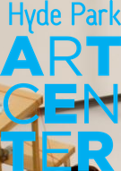

Artists Book-Making Workshop led by Yoonshin Park
Join artist Yoonshin Park for an artists book-making workshop organized in conjunction with the exhibition Prompt and Prompted. Each session will address a different artists book-making subject, such as mark-making, using found objects, simple binding, and more. Workshops will take place in the artists’ studio (Studio 10 at Hyde Park Art Center).
Workshops are open to all experience levels. Participants must be at least 18 years old. All materials will be provided. Registration is required.
REGISTER HERE. Registration opens March 1.